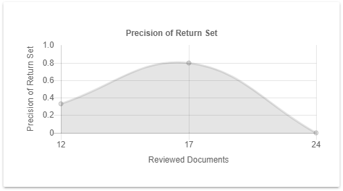

For each iteration/reviewed training batch, the Precision of Return Set graph shows the proportion of the number of responsive documents against the number of reviewed documents in the training batch (return set). Or, in other words, the precision of the last reviewed training batch added to the training set. This is called the marginal precision.

If the marginal precision drops below 10% (0,1), the Assisted Review process has run into completion. There are no more responsive documents present in the project.
The marginal precision is sustained at a high level and then gradually lowers until the majority of responsive documents are found where it is decreased to a low level. If the curve of the marginal precision follows this behavior, it can be an indication that a high level of recall is reached during the process.
This condition is met when there are not that many responsive documents in a large data set. Using the iterative process of Assisted Review, you have found all responsive documents.
If the marginal precision is consistently larger than 80% (0,8), the Assisted Review process should be stopped and all remaining documents should be classified.
This condition is met when there are many responsive documents in the data set. It is more efficient if the system classifies the remaining documents.